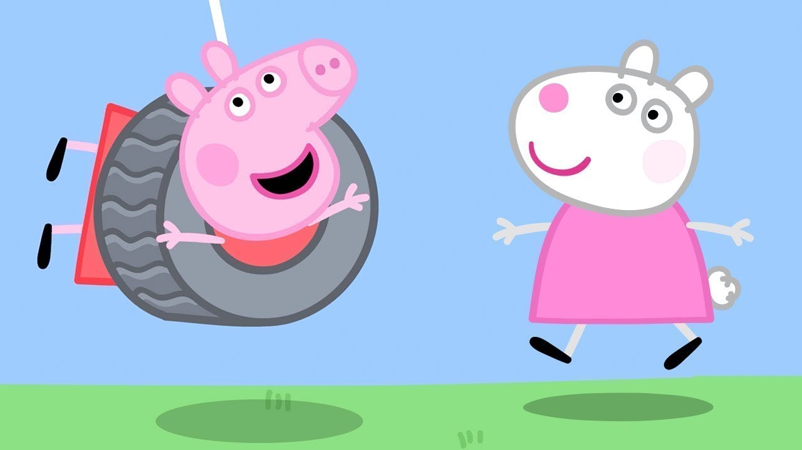
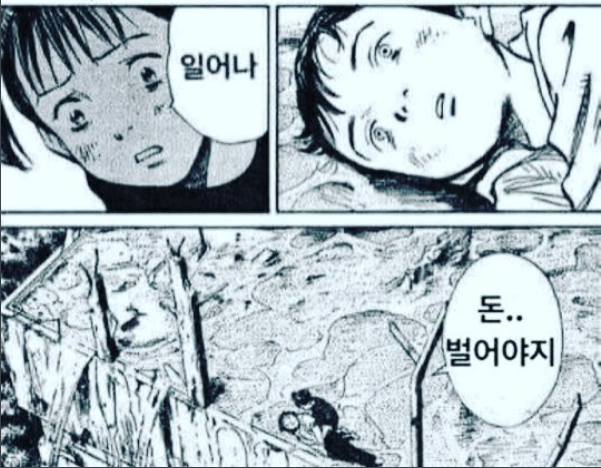

미국 여행/미국 식당 2022.06.02 [시즌9-01] 미국 여행 (America) 미국 여행권과 슈퍼감자 영화에 출연할 수 있는 행운의 티켓을 딴 페파 가족은 비행기를 타고 뉴욕에 온다. 엠파이어 스테이트 빌딩과 자유의 여신상, 분주한 도심을 구경한 뒤 잠을 잘 수 있는 캠핑 카를 몰고 할리우드로 간다. [시즌9-02] 미국 식당 (The Diner) 큰 캠핑카를 타고 할리우드에 가던 페파 가족은 길을 물어보러 식당에 들른다. 이곳에서 일하는 토끼이모가 노래를 부르며 만들어준 달걀 프라이를 먹고 헛간에서 밴드 연주에 맞춰 춤을 추다가, 밖에서 엄청 큰 바퀴가 달린 단 몬스터 트럭으로 진흙탕을 넘는 묘기를 구경한다.
협곡의 나라/할리우드 2022.06.03 [시즌9-03] 협곡의 나라 (Canyon Country) 페파 가족은 할리우드로 가던 중 황소 아저씨처럼 사막에서 공사를 하는 버팔로 아저씨와 들소 아저씨를 만난다. 사막의 거대한 협곡에서도 토끼이모를 만난 페파 가족은 헬리콥터를 타고 협곡을 날다가 뗏목을 타고 래프팅을 해서 서기 700년경에 만들어진 동굴에 도착한다. [시즌9-04] 할리우드 (Hollywood) 고속도로에서 길을 잃은 페파가족은 교통경찰 토끼이모의 안내로
 